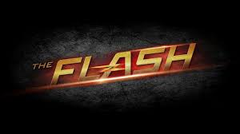
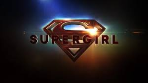

«Стрела́» (англ. Arrow) — американский приключенческо-супергеройский телесериал с элементами драмы, созданный Грегом Берланти, Марком Гуггенхаймом и Эндрю Крайсбергом и основанный на комиксах о супергерое DC Comics Зелёная стрела."Сюжет" В основном в центре сюжета находится бывший плейбой-миллиардер Оливер Куин, который, пробыв пять лет на острове, вернулся, чтобы стать мстителем в маске, борющимся с преступностью в его родном городе при помощи лука и стрел.
«Флэш» (англ. The Flash) — американский телесериал, транслируемый каналом The CW и разработанный Грегом Берланти, Эндрю Крайсбергом и Джеффом Джонсом. Основан на супергерое DC Comics по прозвищу Флэш (Барри Аллен), который был создан Робертом Кнайгером, Джоном Брумом и Кармином Инфантино. Сюжетно является спин-оффом сериала «Стрела» и происходит в той же вселенной."Сюжет" В детстве Барри Аллен стал свидетелем убийства своей матери, в котором несправедливо обвинили его отца. Работая судмедэкспертом, Аллен пытается раскрыть правду об убийстве матери, что приводит его к ускорителю частиц ученого Харрисона Уэллса. После взрыва ускорителя частиц в Аллена попадает молния, из-за чего он впадает в кому на 9 месяцев. Проснувшись, он узнаёт, что имеет способность двигаться на сверхчеловеческих скоростях.
«Супергёрл» (англ. Supergirl) — американский телевизионный сериал, созданный Грегом Берланти и Warner Bros. Television. Сериал основан на персонаже DC Comics Супергёрл, которая является кузиной Супермена и одной из выживших с планеты Криптон. Главную роль в сериале исполняет Мелисса Бенойст. Сериал является частью «Вселенной Стрелы». Премьера телесериала состоялась на телеканале CBS 26 октября 2015 года."Сюжет" Тринадцатилетнюю Кару Зор-Эл отправляют на Землю, так как её родная планета Криптон обречена. Её родители, Зор-Эл и Алура, просят её присмотреть за маленьким кузеном, Кал-Элом(Супермен), которого уже отправили на Землю. Также ей говорят, что под жёлтым солнцем она приобретёт экстраординарные силы. Однако капсула Кары сбивается с курса в результате взрыва планеты и попадает в Фантомную зону, где девочка находится 24 года, но не стареет ни на день, так как в фантомной зоне время не идёт. К тому времени, когда она наконец попадает на Землю, Кал-Эл уже вырос и стал Суперменом. Так как кузен больше не нуждался в ней, она была взята на попечение семьёй Денверсов, которые и вырастили её как свою родную дочь. Спустя 11 лет после прибытия на Землю она вынуждена использовать свои суперспособности, которые до сих пор скрывала, чтобы спасти свою сводную сестру, после чего неожиданно становится известна как Супергёрл
«Леге́нды за́втрашнего дня» (англ. DC's Legends of Tomorrow) — американский телесериал, созданный Грегом Берланти, Эндрю Крайсбергом, Марком Гуггенхаймом, Филом Клеммером и Сарой Шечтер. Телесериал транслируется на канале The CW. Также телесериал является спин-оффом телесериалов «Стрела» и «Флэш» и его события происходят в той же вымышленной вселенной. Премьера сериала состоялась 21 января 2016 года. 11 марта 2016 года сериал был продлён на второй сезон[1]. 8 января 2017 года сериал продлили на третий сезон. 2 апреля 2018 года сериал был продлён на четвёртый сезон[2]. 1 февраля 2019 года сериал был продлён на пятый сезон. 7 января 2020 года сериал был продлён на шестой сезон.«Леге́нды за́втрашнего дня» (англ. DC's Legends of Tomorrow) — американский телесериал, созданный Грегом Берланти, Эндрю Крайсбергом, Марком Гуггенхаймом, Филом Клеммером и Сарой Шечтер. Телесериал транслируется на канале The CW. Также телесериал является спин-оффом телесериалов «Стрела» и «Флэш» и его события происходят в той же вымышленной вселенной. Премьера сериала состоялась 21 января 2016 года. 11 марта 2016 года сериал был продлён на второй сезон[1]. 8 января 2017 года сериал продлили на третий сезон. 2 апреля 2018 года сериал был продлён на четвёртый сезон[2]. 1 февраля 2019 года сериал был продлён на пятый сезон. 7 января 2020 года сериал был продлён на шестой сезон."Сюжет"В будущем бессмертный злодей Вандал Сэвидж (Каспер Крамп) захватил весь мир и убил семью Повелителя времени Рипа Хантера (Артур Дарвилл). В стремлении предотвратить это Рип набирает себе в команду Рэя Палмера / Атома (Брэндон Раут), Сару Лэнс / Белую Канарейку (Кейти Лотц), Мартина Штайна (Виктор Гарбер) и Джефферсона «Джекса» Джексона (Франц Драмех), объединяющихся в Огненного шторма, Кендру Сандерс / Орлицу (Сиара Рене), Картера Холла / Человека-ястреба (Фальк Хенчель), Леонарда Снарта / Капитана Холода (Уэнтуорт Миллер) и Мика Рори / Тепловую Волну (Доминик Перселл).
«Чёрная Молния» (англ. Black Lightning) — американский телесериал, который транслируется на канале The CW, основанный на одноимённом персонаже комиксов DC. Мара Брок Акил и Салим Акил являются создателями сериала, главные роли в котором исполняют Кресс Уильямс в роли главного героя, а также Чайна Энн МакКлэйн, Нафесса Уильямс и Кристин Адамс. Сериал расскажет о жизни Чёрной молнии, супергероя в отставке, который возвращается к геройской жизни и её влиянии на жизнь своей семьи. Разработка сериала началась в сентябре 2016 года, когда компания Fox заказала пилотный эпизод. В феврале 2017 года Fox отказалась от идеи сериала, после чего сериал был приобретён The CW Television Network, которая заказала новый сценарий для пилота. The CW официально заказали сериал в мае 2017 года. Премьера сериала состоялась на канале The CW 16 января 2018 года[1]. 2 апреля 2018 сериал был продлён на второй сезон. 1 февраля 2019 сериал был продлён на третий сезон. 7 января 2020 сериал был продлён на четвёртый сезон."Сюжет" Джефферсон Пирс, оставивший свою супергеройскую личность «Чёрной Молнии» девять лет назад, увидев, какие последствия это оказывает на его семью, вынужден стать героем снова, когда восхождение местной банды "Сотня" приводит к росту преступности и коррупции в его районе
| Номер | Название сериала | Oценка по версии "Seаsonvar" |
|---|---|---|
| 1 | Стрела | 7.60/10 |
| 2 | Флэш | 7.45/10 |
| 3 | Супергёрл | 5.74/10 |
| 4 | Легенды за́втрашнего дня | 6.16/10 |
| 5 | Чёрная молния | 5.39/10 |